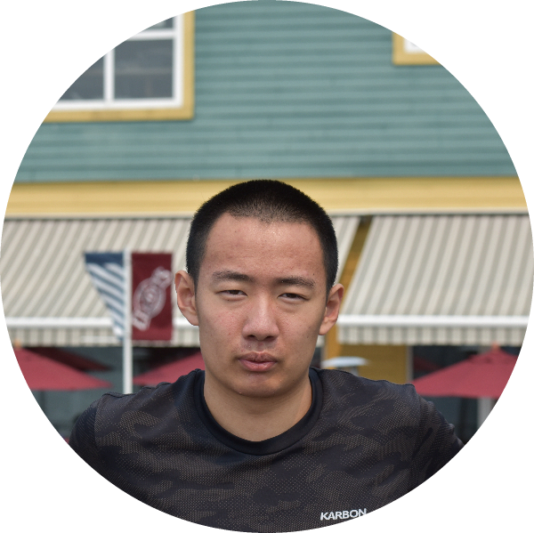
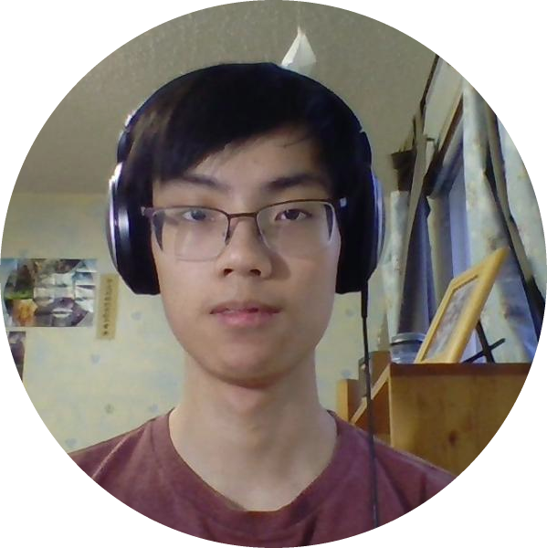
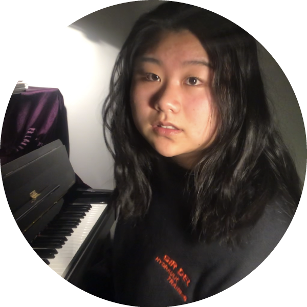
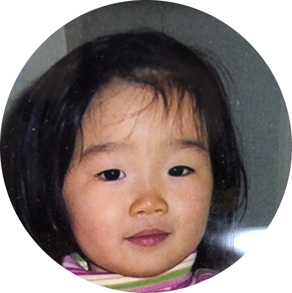

Our Teaching Team
Gabriel Liu
Cello Teacher
Cello Teacher
Hi there, I'm Gabe! I've been playing the cello for 12 years now, and have completed the STE/Suzuki program. I love to share my passion for music, whether that's through Edmonton Youth Orchestra, a cultural concert, or a volunteer performance at a charity gala. I can't wait to meet some of you and go on a musical journey together!
Benul Jayasekara
Cello Teacher
Cello Teacher

My name is Benul. I'm a grade 12 student at Lillian Osborne High School and I love to play the cello and bass clarinet and I am also a percusionnist. I've played in Singing Strings and Edmonton Youth Orchestra. Additionally, I've also attended foreign programs, and played professionally. I look forward to meeting you all!
Savannah Seibel
Viola Teacher
Viola Teacher
Hi, I'm Savannah! I have been playing violin and viola for a total of 10 years. Playing my instrument is one of the best parts of my life, and I think that giving other young students a chance to experience that same love for music is extremely important. Therefore, I am excited to share my insight with kids who have a passion for music and creativity!
Christie Leung
Violin Teacher
Violin Teacher

Hey! I'm Christie. I play the violin and piano and have obtained DipABRSM for both. I organized an Intergenerational Classic Music Event, partnered with the Edmonton Senior Center during the pandemic to promote music within the community. Hope to meet some of you soon!
Jessica Chen
Violin Teacher
Violin Teacher

I was introduced to the violin when I was six years old, and have never put it down since. It has been part of more than half of my life with no intention of stopping. I hope I can share this passion through teaching as everyone has a story they could tell through music.
Eden Rutto
Violin Teacher
Violin Teacher
Hello! My name is Eden. I have been playing the violin for the past 12 years. I have completed the Suzuki program, and I’m currently working towards my grade 10 RCM exam. I am in the Senior EYO, and I also play in the Conservatory Orchestra as concertmaster. I believe everyone should get the chance to learn an instrument, which is why I’m excited to start teaching!
Marcus Wong
Piano Teacher
Piano Teacher

Hi! I'm Marcus Wong, and I'm a grade 12 student at Old Scona high school. I'm an avid pianist currently working on my ARCT. I'm also a trombonist and play in Edmonton's Little Birds Big Band. I'm looking forward to giving back to the community and helping others to enjoy music as much as I do!
Chong Wang
Piano Teacher

Piano Teacher
Greetings! I have been playing the piano since 2012 and am currently a student at Lillian Osborne High School. During this pandemic, piano was one of my best tools to enjoy my time and I have learned to play many pieces of all styles -- from baroque to modern. I hope I am able to share my passion of piano to you.
Darwin Trieu
Piano Teacher

Piano Teacher
Hello, my name is Darwin. I am a grade 12 student currently attending Harry Ainlay High School. I have been learning piano for 11 years and just recently completed my ARCT diploma. I hope to guide others in finding their passions for music as both a teacher and a supporter.
Hannah Liu
Piano Teacher

Piano Teacher
Hi! My name is Hannah. I’ve been playing piano for over 12 years, initially learning using the Suzuki method, and now working towards a Level 10 Royal Conservatory of Music degree. I enjoy sharing my passion for music with my students, and performing at virtual concerts. I would love to help your child gain a new love of music and accomplish their goals!
Hannah Kim
Piano Teacher

Piano Teacher
Hey hey! I'm Hannah, and I'm a Grade 11 student at Old Scona high school. I’ve been playing piano on and off for the past 10+ years--from classics composed by Chopin and Bach, to instrumental soundtracks from Studio Ghibli films, I’ve found a special love for music that I’d love to share with as many people as possible. :)
Ryan Li
Piano Teacher
Piano Teacher
Hello, my name is Ryan. I am a senior student at Lillian Osborne high school. I started learning piano since elementary school and have completed grade 9 at the Royal Conservatory of Music. I look forward to meeting you all to share this musical journey together!
Alex Cai
Trombone Teacher
Trombone Teacher
Hi there, I'm Alex! I've been playing bass trombone in the Senior Edmonton Youth Orchestra for the past three years and I also have a Grade 10 RCM certificate in piano. I'm passionate about music from a variety of genres and excited to help on your musical journey!